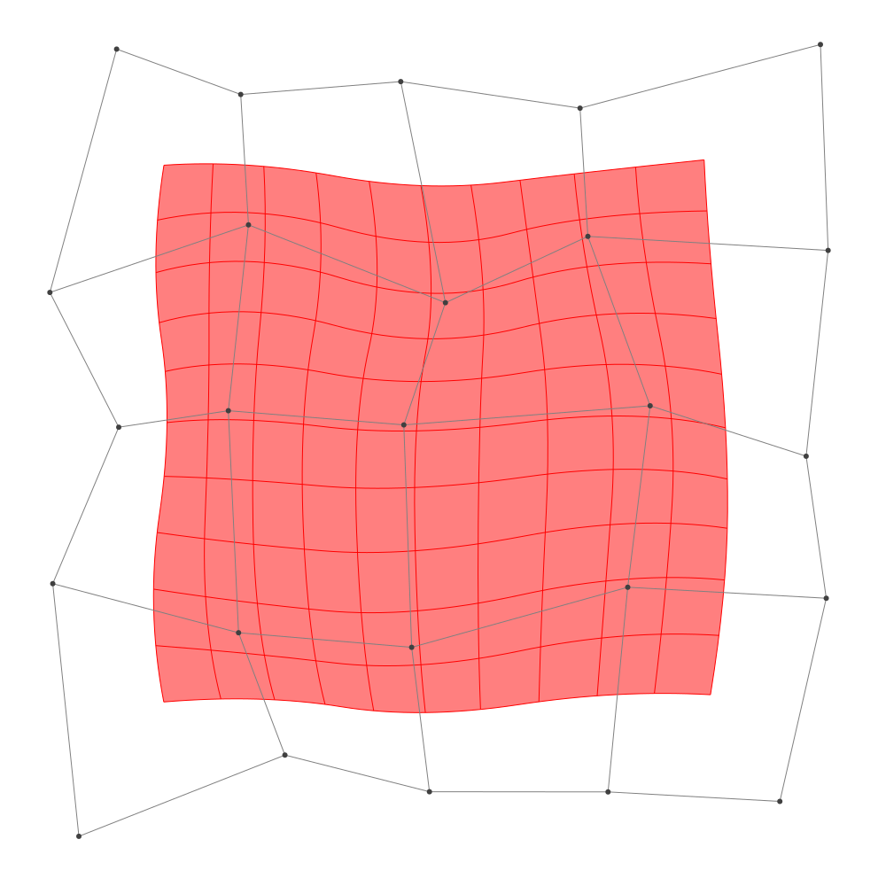

B-spline manifold
Multi-dimensional B-spline
tensor product
\[B_{i^1,\dots,i^d}(t^1,\dots,t^d) =B_{(i^1,p^1,k^1)}(t^1)\cdots B_{(i^d,p^d,k^d)}(t^d)\]
B-spline manifold
B-spline manifold is a parametric representation of a shape.
For given $d$-dimensional B-spline basis functions $B_{i^1,\dots,i^d}$ and given points $\bm{a}_{i^1,\dots,i^d} \in \mathbb{R}^{\hat{d}}$, B-spline manifold is defined by following equality:
\[\bm{p}(t^1,\dots,t^d;\bm{a}_{i^1,\dots,i^d}) =\sum_{i^1,\dots,i^d}B_{i^1,\dots,i^d}(t^1,\dots,t^d) \bm{a}_{i^1,\dots,i^d}\]
Where $\bm{a}_{i^1,\dots,i^d}$ are called control points.
We will also write $\bm{p}(t^1,\dots,t^d; \bm{a})$, $\bm{p}(t^1,\dots,t^d)$, $\bm{p}(t; \bm{a})$ or $\bm{p}(t)$ for simplicity.
julia> P1 = BSplineSpace{1}(KnotVector([0,0,1,1]))BSplineSpace{1, Float64}(KnotVector([0.0, 0.0, 1.0, 1.0]))julia> P2 = BSplineSpace{1}(KnotVector([1,1,2,3,3]))BSplineSpace{1, Float64}(KnotVector([1.0, 1.0, 2.0, 3.0, 3.0]))julia> n1 = dim(P1) # 22julia> n2 = dim(P2) # 33julia> a = [SVector(i, j) for i in 1:n1, j in 1:n2] # n1 × n2 array of d̂ array.2×3 Matrix{StaticArrays.SVector{2, Int64}}: [1, 1] [1, 2] [1, 3] [2, 1] [2, 2] [2, 3]julia> M = BSplineManifold(a, (P1, P2))BSplineManifold{2, (1, 1), StaticArrays.SVector{2, Int64}, Tuple{BSplineSpace{1, Float64}, BSplineSpace{1, Float64}}}((BSplineSpace{1, Float64}(KnotVector([0.0, 0.0, 1.0, 1.0])), BSplineSpace{1, Float64}(KnotVector([1.0, 1.0, 2.0, 3.0, 3.0]))), StaticArrays.SVector{2, Int64}[[1, 1] [1, 2] [1, 3]; [2, 1] [2, 2] [2, 3]])
BasicBSpline.BSplineManifold — TypeConstruct Rational B-spline manifold from given control points and B-spline spaces.
Examples
julia> using StaticArrays
julia> P = BSplineSpace{2}(KnotVector(0,0,0,1,1,1))
BSplineSpace{2, Float64}(KnotVector([0.0, 0.0, 0.0, 1.0, 1.0, 1.0]))
julia> a = [SVector(1,0), SVector(1,1), SVector(0,1)]
3-element Vector{SVector{2, Int64}}:
[1, 0]
[1, 1]
[0, 1]
julia> M = BSplineManifold(a,(P,));
julia> M(0.4)
2-element SVector{2, Float64} with indices SOneTo(2):
0.84
0.64BasicBSpline.RationalBSplineManifold — TypeConstruct Rational B-spline manifold from given control points, weights and B-spline spaces.
Examples
julia> using StaticArrays, LinearAlgebra
julia> P = BSplineSpace{2}(KnotVector(0,0,0,1,1,1))
BSplineSpace{2, Float64}(KnotVector([0.0, 0.0, 0.0, 1.0, 1.0, 1.0]))
julia> w = [1, 1/√2, 1]
3-element Vector{Float64}:
1.0
0.7071067811865475
1.0
julia> a = [SVector(1,0), SVector(1,1), SVector(0,1)]
3-element Vector{SVector{2, Int64}}:
[1, 0]
[1, 1]
[0, 1]
julia> M = RationalBSplineManifold(a,w,(P,)); # 1/4 arc
julia> M(0.3)
2-element SVector{2, Float64} with indices SOneTo(2):
0.8973756499953727
0.4412674277525845
julia> norm(M(0.3))
1.0B-spline curve
julia> ## 1-dim B-spline manifold p = 2 # degree of polynomial2julia> k = KnotVector(1:12) # knot vectorKnotVector([1.0, 2.0, 3.0, 4.0, 5.0, 6.0, 7.0, 8.0, 9.0, 10.0, 11.0, 12.0])julia> P = BSplineSpace{p}(k) # B-spline spaceBSplineSpace{2, Float64}(KnotVector([1.0, 2.0, 3.0, 4.0, 5.0, 6.0, 7.0, 8.0, 9.0, 10.0, 11.0, 12.0]))julia> a = [SVector(i-5, 3*sin(i^2)) for i in 1:dim(P)] # control points9-element Vector{StaticArrays.SVector{2, Float64}}: [-4.0, 2.5244129544236893] [-3.0, -2.2704074859237844] [-2.0, 1.2363554557252698] [-1.0, -0.8637099499951959] [0.0, -0.3970552502933191] [1.0, -2.9753365603293473] [2.0, -2.8612579582784154] [3.0, 2.7600781145903723] [4.0, -1.8896639828233615]julia> M = BSplineManifold(a, (P,)) # Define B-spline manifoldBSplineManifold{1, (2,), StaticArrays.SVector{2, Float64}, Tuple{BSplineSpace{2, Float64}}}((BSplineSpace{2, Float64}(KnotVector([1.0, 2.0, 3.0, 4.0, 5.0, 6.0, 7.0, 8.0, 9.0, 10.0, 11.0, 12.0])),), StaticArrays.SVector{2, Float64}[[-4.0, 2.5244129544236893], [-3.0, -2.2704074859237844], [-2.0, 1.2363554557252698], [-1.0, -0.8637099499951959], [0.0, -0.3970552502933191], [1.0, -2.9753365603293473], [2.0, -2.8612579582784154], [3.0, 2.7600781145903723], [4.0, -1.8896639828233615]])julia> save_png("1dim.png", M, unitlength = 50)

B-spline surface
julia> p = 2 # degree of polynomial2julia> k = KnotVector(1:8) # knot vectorKnotVector([1.0, 2.0, 3.0, 4.0, 5.0, 6.0, 7.0, 8.0])julia> P = BSplineSpace{p}(k) # B-spline spaceBSplineSpace{2, Float64}(KnotVector([1.0, 2.0, 3.0, 4.0, 5.0, 6.0, 7.0, 8.0]))julia> rand_a = [SVector(rand(), rand()) for i in 1:dim(P), j in 1:dim(P)]5×5 Matrix{StaticArrays.SVector{2, Float64}}: [0.390163, 0.060797] [0.0954425, 0.912444] … [0.816339, 0.945746] [0.715888, 0.977891] [0.192412, 0.358435] [0.216898, 0.433901] [0.347077, 0.563924] [0.146173, 0.193985] [0.0231142, 0.57894] [0.362896, 0.561989] [0.585117, 0.8721] [0.0467617, 0.27926] [0.301847, 0.454841] [0.825704, 0.747718] [0.760078, 0.997664]julia> a = [SVector(2*i-6.5, 2*j-6.5) for i in 1:dim(P), j in 1:dim(P)] + rand_a # random generated control points5×5 Matrix{StaticArrays.SVector{2, Float64}}: [-4.10984, -4.4392] [-4.40456, -1.58756] … [-3.68366, 4.44575] [-1.78411, -3.52211] [-2.30759, -2.14156] [-2.2831, 3.9339] [-0.152923, -3.93608] [-0.353827, -2.30601] [-0.476886, 4.07894] [1.8629, -3.93801] [2.08512, -1.6279] [1.54676, 3.77926] [3.80185, -4.04516] [4.3257, -1.75228] [4.26008, 4.49766]julia> M = BSplineManifold(a,(P,P)) # Define B-spline manifoldBSplineManifold{2, (2, 2), StaticArrays.SVector{2, Float64}, Tuple{BSplineSpace{2, Float64}, BSplineSpace{2, Float64}}}((BSplineSpace{2, Float64}(KnotVector([1.0, 2.0, 3.0, 4.0, 5.0, 6.0, 7.0, 8.0])), BSplineSpace{2, Float64}(KnotVector([1.0, 2.0, 3.0, 4.0, 5.0, 6.0, 7.0, 8.0]))), StaticArrays.SVector{2, Float64}[[-4.109836875667756, -4.439203028919772] [-4.404557471299437, -1.5875564193570106] … [-4.436877801768398, 1.699273900147635] [-3.6836608589241333, 4.4457455813718365]; [-1.784111837798032, -3.5221085606091975] [-2.3075882187145855, -2.1415647683792876] … [-2.195586739929674, 2.462043561457196] [-2.283101515331688, 3.93390130928215]; … ; [1.8628955488087842, -3.9380112354905377] [2.0851168334904244, -1.62789971608486] … [1.6350887857576393, 2.332062331255318] [1.546761712374515, 3.7792603617821325]; [3.8018473075633716, -4.045158858182949] [4.325704256216205, -1.7522820247483057] … [4.346695165754522, 2.173725603925602] [4.260077645028523, 4.49766402261066]])julia> save_png("2dim.png", M) # save image

Affine commutativity
If $T$ is a affine transform $\mathbb{R}^d\to\mathbb{R}^d$, then the following equality holds.
\[T(\bm{p}(t; \bm{a})) =\bm{p}(t; T(\bm{a}))\]